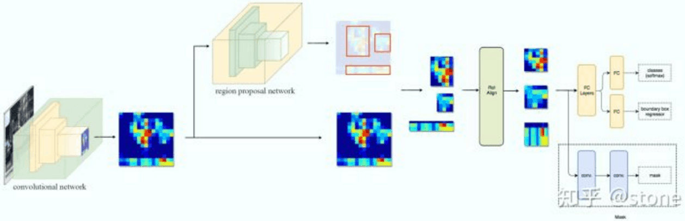

目标检测学习笔记
Pre Knowledge
Anchors
提到RPN网络，就不能不说anchors。所谓anchors，实际上就是一组作用在滑动窗口上的不同大小、不同形状的检测框。实际上，论文通过anchors引入了检测中常用到的多尺度方法。
那么这9个anchors是做什么的呢？借用Faster RCNN论文中的原图，遍历Conv layers计算获得的feature maps，为每一个点都配备这9种anchors作为初始的检测框。这样做获得检测框很不准确，不用担心，后面还有2次bounding box regression可以修正检测框位置。

解释一下上面这张图的数字。
- 在原文中使用的是ZF model中，其Conv Layers中最后的conv5层num_output=256，对应生成256张特征图，所以相当于feature map每个点都是256-dimensions
- 在conv5之后，做了rpn_conv/3x3卷积且num_output=256，相当于每个点又融合了周围3x3的空间信息（猜测这样做也许更鲁棒？反正我没测试），同时256-d不变（如图4和图7中的红框）
- 假设在conv5 feature map中每个点上有k个anchor（默认k=9），而每个anhcor要分foreground和background，所以每个点由256d feature转化为cls=2k scores；而每个anchor都有[x, y, w, h]对应4个偏移量，所以reg=4k coordinates
- 补充一点，全部anchors拿去训练太多了，训练程序会在合适的anchors中随机选取128个postive anchors+128个negative anchors进行训练。
其实RPN最终就是在原图尺度上，设置了密密麻麻的候选Anchor。然后用cnn去判断哪些Anchor是里面有目标的foreground anchor，哪些是没目标的backgroud。所以，仅仅是个二分类而已！
那么Anchor一共有多少个？原图800x600，VGG下采样16倍，feature map每个点设置9个Anchor，所以共有17100个。
Region Proposal Networks(RPN)
A Region Proposal Network (RPN) takes an image (of any size) as input and outputs a set of rectangular object proposals, each with an objectness score.
- Input: 一个任意形状的图像
- Output: 一系列框住了可能目标物体的矩形，每个矩形同时配一个置信分数
- 这个首部的3x3的小卷积核是一切的开始。这个卷积核会把3x3x(256 or 512, deepth or channel, depends on the feature extracting network, we take 256 here)的数据卷积成一个1x1x256的低维list，供后续卷积使用。
- 3x3小卷积核后面跟着两个更小的1x1的卷积核。这两个1x1的小卷积核的功能是维度变换，作用分别是做分类任务和bounding box位置的回归，这两者的维度分别为(2k和4k)。之所以分类有2k是由于这里把前景和背景的概率分别进行了预测，而每个上一步卷积出来的低维list都会对应有k个anchor。Bounding box回归每个anchor需要四个值的原因是其实这里的回归进行的是一个线性变换（x、y方向的scale与平移），刚好需要四个参数。具体如下：
- Loss问题：RPN实质上是一个同时具有分类与回归两种功能的Multi-Task任务，所以其Loss也是由两部分组成的：
FAQ
Q1: 这里的1x1卷积核不是只对一个256元素的array做了一个维度变换吗，和anchor怎么扯上关系的？
A1: 其实anchor的分类（前背景）与位置回归是作为这些输出的label出现的，即这个1x1的卷积核确实只是一个单纯的维度变换，作用其实和全连接层是一致的，只是训练时候输出的值的label是用Anchor的前背景以及位置映射来标注的。
Q2: 为什么前背景分类需要用两个值进行标注，一个不是已经足够了吗？
A2: 因为标注的并不是直接的IoU(Intersection-over-Union)， 而是两个binary的数字，Pos:0/1 Neg:0/1；此外还要考虑的是除了Pos和Neg两类，还有既不Pos也不Neg的无用类别，这种类别的Pos和Neg都是0。详见：
Feature Pyramid Network (FPN)
理解：通过捕获特征提取中各个池化层间的特征图，加上压缩后又通过插值得到同样size的特征图的方法得到可供后续处理的多种尺寸的特征图，从而使得网络可以提取到同一张图片上各种尺度的目标
多尺度检测在目标检测中变得越来越重要，对小目标的检测尤其如此。现在主流的目标检测方法很多都用到了多尺度的方法，包括最新的yolo v3。Feature Pyramid Network (FPN)则是一种精心设计的多尺度检测方法，下面就开始简要介绍FPN。
FPN结构中包括自下而上，自上而下和横向连接三个部分，如下图所示。这种结构可以将各个层级的特征进行融合，使其同时具有强语义信息和强空间信息，在特征学习中算是一把利器了。
FPN实际上是一种通用架构，可以结合各种骨架网络使用，比如VGG，ResNet等。Mask RCNN文章中使用了ResNNet-FPN网络结构。如下图：
ResNet-FPN包括3个部分，自下而上连接，自上而下连接和横向连接。下面分别介绍。
自下而上
从下到上路径。可以明显看出，其实就是简单的特征提取过程，和传统的没有区别。具体就是将ResNet作为骨架网络，根据feature map的大小分为5个stage。stage2，stage3，stage4和stage5各自最后一层输出conv2，conv3，conv4和conv5分别定义为 , 他们相对于原始图片的stride是{4,8,16,32}。需要注意的是，考虑到内存原因，stage1的conv1并没有使用。
自上而下和横向连接
自上而下是从最高层开始进行上采样，这里的上采样直接使用的是最近邻上采样，而不是使用反卷积操作，一方面简单，另外一方面可以减少训练参数。横向连接则是将上采样的结果和自底向上生成的相同大小的feature map进行融合。具体就是对 中的每一层经过一个conv 1x1操作（1x1卷积用于降低通道数），无激活函数操作，输出通道全部设置为相同的256通道，然后和上采样的feature map进行加和操作。在融合之后还会再采用3*3的卷积核对已经融合的特征进行处理，目的是消除上采样的混叠效应（aliasing effect）。
实际上，上图少绘制了一个分支：M5经过步长为2的max pooling下采样得到 P6，作者指出使用P6是想得到更大的anchor尺度512×512。但P6是只用在 RPN中用来得到region proposal的，并不会作为后续Fast RCNN的输入。
总结一下，ResNet-FPN作为RPN输入的feature map是 ，而作为后续Fast RCNN的输入则是 。
线性插值
理解：对于一个新的点，对其角线上的两个点进行操作，以它们和新点之间夹的点的距离为权重，进行平均操作
已知数据 与 ，要计算 $[x_0, x_1] $区间内某一位置 在直线上的值，如下图所示。

计算方法很简单，通过斜率相等就可以构建y和x之间的关系，如下：
仔细看就是用 和 ， 的距离作为一个权重（除以 是归一化的作用），用于 和 的加权。这个思想很重要，因为知道了这个思想，理解双线性插值就非常简单了。
双线性插值
理解：双线性插值本质上就是在两个方向上（先对四个角上的点同一y的两个点分别做线性插值，再在y轴上对这两个新产生的点做线性插值）做线性插值。
如图，假设我们想得到P点的插值，我们可以先在x方向上，对 和 之间做线性插值得到 ， 同理可得。然后在y方向上对 和 进行线性插值就可以得到最终的P。其实知道这个就已经理解了双线性插值的意思了，如果用公式表达则如下（注意前面的系数看成权重就很好理解了)。
首先在 x 方向进行线性插值，得到

然后在 y 方向进行线性插值，得到
这样就得到所要的结果

ROI pooling
理解：把一个任意形状(AxB)的区域压缩成相同特征图(MxN)的方法：把这个区域等分成MxN份，在每个区域上做Max Pooling
通过一个例子来形象理解。假设现在我们有一个8x8大小的feature map，我们要在这个feature map上得到ROI，并且进行ROI pooling到2x2大小的输出。
假设ROI的bounding box为 。如图：

将它划分为2x2的网格，因为ROI的长宽除以2是不能整除的，所以会出现每个格子大小不一样的情况。
进行max pooling的最终2x2的输出为：
最后以一张动图形象概括之：
ROI Align
理解：在之前的ROI Pooling的基础上取消了其做的两种近似，而用前面提到的双线性插值法得到更加精确的结果
在Faster RCNN中，有两次整数化的过程：
- region proposal的xywh通常是小数，但是为了方便操作会把它整数化。
- 将整数化后的边界区域平均分割成 k x k 个单元，对每一个单元的边界进行整数化。
两次整数化的过程如下图所示：
事实上，经过上述两次整数化，此时的候选框已经和最开始回归出来的位置有一定的偏差，这个偏差会影响检测或者分割的准确度。在论文里，作者把它总结为“不匹配问题”（misalignment）。
为了解决这个问题，ROI Align方法取消整数化操作，保留了小数，使用以上介绍的双线性插值的方法获得坐标为浮点数的像素点上的图像数值。但在实际操作中，ROI Align并不是简单地补充出候选区域边界上的坐标点，然后进行池化，而是重新进行设计。
下面通过一个例子来讲解ROI Align操作。如下图所示，虚线部分表示feature map，实线表示ROI，这里将ROI切分成2x2的单元格。如果采样点数是4，那我们首先将每个单元格子均分成四个小方格（如红色线所示），每个小方格中心就是采样点。这些采样点的坐标通常是浮点数，所以需要对采样点像素进行双线性插值（如四个箭头所示），就可以得到该像素点的值了。然后对每个单元格内的四个采样点进行maxpooling，就可以得到最终的ROIAlign的结果。
需要说明的是，在相关实验中，作者发现将采样点设为4会获得最佳性能，甚至直接设为1在性能上也相差无几。事实上，ROI Align 在遍历取样点的数量上没有ROIPooling那么多，但却可以获得更好的性能，这主要归功于解决了misalignment的问题。
Faster RCNN

Mask RCNN

与Faster RCNN关系
简单来说，Mask RCNN的头部网络和Faster RCNN完全相同，不同的地方只有最后的预测部分，从之前的分类+bounding box回归改为了分类+bounding box回归+Mask预测
Mask RCNN的构建很简单，只是在ROI pooling（实际上用到的是ROIAlign，后面会讲到）之后添加卷积层，进行mask预测的任务。
损失
Mask RCNN定义多任务损失：
和 与faster rcnn的定义没有区别。需要具体说明的是 ，假设一共有K个类别，则mask分割分支的输出维度是 , 对于 中的每个点，都会输出K个二值Mask（每个类别使用sigmoid输出）。需要注意的是，计算loss的时候，并不是每个类别的sigmoid输出都计算二值交叉熵损失，而是该像素属于哪个类，哪个类的sigmoid输出才要计算损失(如图红色方形所示)。并且在测试的时候，我们是通过分类分支预测的类别来选择相应的mask预测。这样，mask预测和分类预测就彻底解耦了。
这与FCN方法是不同，FCN是对每个像素进行多类别softmax分类，然后计算交叉熵损失，很明显，这种做法是会造成类间竞争的，而每个类别使用sigmoid输出并计算二值损失，可以避免类间竞争。实验表明，通过这种方法，可以较好地提升性能。